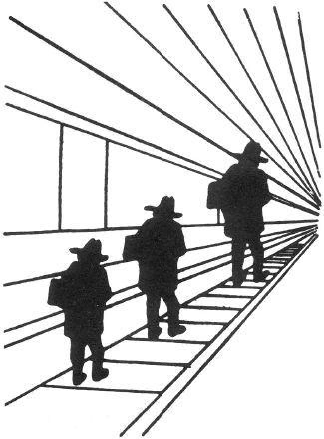

A remarkable aspect of your mental life is that you are rarely stumped. True, you occasionally face a question such as 17 × 24 = ? to which no answer comes immediately to mind, but these dumbfounded moments are rare. The normal state of your mind is that you have intuitive feelings and opinions about almost everything that comes your way. You like or dislike people long before you know much about them; you trust or distrust strangers without knowing why; you feel that an enterprise is bound to succeed without analyzing it. Whether you state them or not, you often have answers to questions that you do not completely understand, relying on evidence that you can neither explain nor defend.
Substituting Questions
I propose a simple account of how we generate intuitive opinions on complex matters. If a satisfactory answer to a hard question isebr ques D not found quickly, System 1 will find a related question that is easier and will answer it. I call the operation of answering one question in place of another substitution. I also adopt the following terms:
The target question is the assessment you intend to produce.
The heuristic question is the simpler question that you answer instead.
The technical definition of heuristic is a simple procedure that helps find adequate, though often imperfect, answers to difficult questions. The word comes from the same root as eureka.
The idea of substitution came up early in my work with Amos, and it was the core of what became the heuristics and biases approach. We asked ourselves how people manage to make judgments of probability without knowing precisely what probability is. We concluded that people must somehow simplify that impossible task, and we set out to find how they do it. Our answer was that when called upon to judge probability, people actually judge something else and believe they have judged probability. System 1 often makes this move when faced with difficult target questions, if the answer to a related and easier heuristic question comes readily to mind.
Substituting one question for another can be a good strategy for solving difficult problems, and George Pólya included substitution in his classic How to Solve It: “If you can’t solve a problem, then there is an easier problem you can solve: find it.” Pólya’s heuristics are strategic procedures that are deliberately implemented by System 2. But the heuristics that I discuss in this chapter are not chosen; they are a consequence of the mental shotgun, the imprecise control we have over targeting our responses to questions.
Consider the questions listed in the left-hand column of table 1. These are difficult questions, and before you can produce a reasoned answer to any of them you must deal with other difficult issues. What is the meaning of happiness? What are the likely political developments in the next six months? What are the standard sentences for other financial crimes? How strong is the competition that the candidate faces? What other environmental or other causes should be considered? Dealing with these questions seriously is completely impractical. But you are not limited to perfectly reasoned answers to questions. There is a heuristic alternative to careful reasoning, which sometimes works fairly well and sometimes leads to serious errors.
|
Target Question |
Heuristic Question |
|
|
|
|
|
|
How much would you contribute to save an endangered species? |
How much emotion do I feel when I think of dying dolphins? |
|
|
|
|
|
|
How happy are you with your life these days? |
What is my mood right now? |
|
|
|
|
|
|
How popular is the president right now? |
How popular will the president be six months from now? |
|
|
|
|
|
|
How should financial advisers who prey on the elderly be punished? |
How much anger do I feel when I think of financial predators? |
|
|
|
|
|
|
This woman is running for the primary. How far will she go in politics? |
Does this woman look like a political winner? |
|
|
Table 1 |
|
The mental shotgun makes it easy to generate quick answers to difficult questions without imposing much hard work on your lazy System 2. The right-hand counterpart of each of the left-hand questions is very likely to be evoked and very easily answered. Your feelings about dolphins and financial crooks, your current mood, your impressions of the political skill of the primary candidate, or the current standing of the president will readily come to mind. The heuristic questions provide an off-the-shelf answer to each of the difficult target questions.
Something is still missing from this story: the answers need to be fitted to the original questions. For example, my feelings about dying dolphins must be expressed in dollars. Another capability of System 1, intensity matching, is available to solve that problem. Recall that both feelings and contribution dollars are intensity scales. I can feel more or less strongly about dolphins and there is a contribution that matches the intensity of my feelings. The dollar amount that will come to my mind is the matching amount. Similar intensity matches are possible for all the questions. For example, the political skills of a candidate can range from pathetic to extraordinarily impressive, and the scale of political success can range from the low of “She will be defeated in the primary” to a high of “She will someday be president of the United States.”
The automatic processes of the mental shotgun and intensity matching often make available one or more answers to easy questions that could be mapped onto the target question. On some occasions, substitution will occur and a heuristic answer will be endorsed by System 2. Of course, System 2 has the opportunity to reject this intuitive answer, or to modify it by incorporating other information. However, a lazy System 2 often follows the path of least effort and endorses a heuristic answer without much scrutiny of whether it is truly appropriate. You will not be stumped, you will not have to work very her р wheard, and you may not even notice that you did not answer the question you were asked. Furthermore, you may not realize that the target question was difficult, because an intuitive answer to it came readily to mind.
The 3-D Heuristic
Have a look at the picture of the three men and answer the question that follows.

Figure 9
As printed on the page, is the figure on the right larger than the figure on the left?
The obvious answer comes quickly to mind: the figure on the right is larger. If you take a ruler to the two figures, however, you will discover that in fact the figures are exactly the same size. Your impression of their relative size is dominated by a powerful illusion, which neatly illustrates the process of substitution.
The corridor in which the figures are seen is drawn in perspective and appears to go into the depth plane. Your perceptual system automatically interprets the picture as a three-dimensional scene, not as an image printed on a flat paper surface. In the 3-D interpretation, the person on the right is both much farther away and much larger than the person on the left. For most of us, this impression of 3-D size is overwhelming. Only visual artists and experienced photographers have developed the skill of seeing the drawing as an object on the page. For the rest of us, substitution occurs: the dominant impression of 3-D size dictates the judgment of 2-D size. The illusion is due to a 3-D heuristic.
What happens here is a true illusion, not a misunderstanding of the question. You knew that the question was about the size of the figures in the picture, as printed on the page. If you had been asked to estimate the size of the figures, we know from experiments that your answer would have been in inches, not feet. You were not confused about the question, but you were influenced by the answer to a question that you were not asked: “How tall are the three people?”
The essential step in the heuristic—the substitution of three-dimensional for two-dimensional size—occurred automatically. The picture contains cues that suggest a 3-D interpretation. These cues are irrelevant to the task at hand—the judgment of size of the figure on the page—and you should have ignored them, but you could not. The bias associated with the heuristic is that objects that appear to be more distant also appear to be larger on the page. As this example illustrates, a judgment that is based on substitution will inevitably be biased in predictable ways. In this case, it happens so deep in the perceptual system that you simply cannot help it.
The Mood Heuristic for Happiness
A survey of German students is one of the best examples of substitution. The survey that the young participants completed included the following two questions:
How happy are you these days?
How many dates did you have last month?
How many dates did you have last month?
How happy are you these days?
The results this time were completely different. In this sequence, the correlation between the number of dates and reported happiness was about as high as correlations between psychological measures can get. What happened?
The explanation is straightforward, and it is a good example of substitution. Dating was apparently not the center of these students’ life (in the first survey, happiness and dating were uncorrelated), but when they were asked to think about their romantic life, they certainly had an emotional reaction. The students who had many dates were reminded of a happy aspect of their life, while those who had none were reminded of loneliness and rejection. The emotion aroused by the dating question was still on everyone’s mind when the query about general happiness came up.
The psychology of what happened is precisely analogous to the psychology of the size illusion in figure 9. “Happiness these days” is not a natural or an easy assessment. A good answer requires a fair amount of thinking. However, the students who had just been asked about their dating did not need to think hard because they already had in their mind an answer to a related question: how happy they were with their love life. They substituted the question to which they had a readymade answer for the question they were asked.
Here again, as we did for the illusion, we can ask: Are the students confused? Do they really think that the two questions—the one they were asked and the one they answer—are synonymous? Of course not. The students do not temporarily lose their ability to distinguish romantic life from life as a whole. If asked about the two concepts, they would say they are different. But they were not asked whether the concepts are different. They were asked how happy they were, and System 1 has a ready answer.
Dating is not unique. The same pattern is found if a question about the students’ relations with their parents or about their finances immediately precedes the question about general happiness. In both cases, satisfaction in the particular domain dominates happiness reports. Any emotionally significant question that alters a person’s mood will have the same effect. WYSIATI. The present state of mind looms very large when people evaluate their happiness.
The Affect Heuristic
The dominance of conclusions over arguments is most pronounced where emotions are involved. The psychologist Paul Slovic has proposed an affect heuristic in which people let their likes and dislikes determine their beliefs about the world. Your political preference determines the arguments that you find compelling. If you like the current health policy, you believe its benefits are substantial and its costs more manageable than the costs of alternatives. If you are a hawk in your attitude toward other nations, you probabltheр"0%y think they are relatively weak and likely to submit to your country’s will. If you are a dove, you probably think they are strong and will not be easily coerced. Your emotional attitude to such things as irradiated food, red meat, nuclear power, tattoos, or motorcycles drives your beliefs about their benefits and their risks. If you dislike any of these things, you probably believe that its risks are high and its benefits negligible.
The primacy of conclusions does not mean that your mind is completely closed and that your opinions are wholly immune to information and sensible reasoning. Your beliefs, and even your emotional attitude, may change (at least a little) when you learn that the risk of an activity you disliked is smaller than you thought. However, the information about lower risks will also change your view of the benefits (for the better) even if nothing was said about benefits in the information you received.
We see here a new side of the “personality” of System 2. Until now I have mostly described it as a more or less acquiescent monitor, which allows considerable leeway to System 1. I have also presented System 2 as active in deliberate memory search, complex computations, comparisons, planning, and choice. In the bat-and-ball problem and in many other examples of the interplay between the two systems, it appeared that System 2 is ultimately in charge, with the ability to resist the suggestions of System 1, slow things down, and impose logical analysis. Self-criticism is one of the functions of System 2. In the context of attitudes, however, System 2 is more of an apologist for the emotions of System 1 than a critic of those emotions—an endorser rather than an enforcer. Its search for information and arguments is mostly constrained to information that is consistent with existing beliefs, not with an intention to examine them. An active, coherence-seeking System 1 suggests solutions to an undemanding System 2.
Speaking of Substitution and Heuristics
“Do we still remember the question we are trying to answer? Or have we substituted an easier one?”
“The question we face is whether this candidate can succeed. The question we seem to answer is whether she interviews well. Let’s not substitute.”
“He likes the project, so he thinks its costs are low and its benefits are high. Nice example of the affect heuristic.”
“We are using last year’s performance as a heuristic to predict the value of the firm several years from now. Is this heuristic good enough? What other information do we need?”
The table below contains a list of features and activities that have been attributed to System 1. Each of the active sentences replaces a statement, technically more accurate but harder to understand, to the effect that a mental event occurs automatically and fast. My hope is that the list of traits will help you develop an intuitive sense of the “personality” of the fictitious System 1. As happens with other characters you know, you will have hunches about what System 1 would do under different circumstances, and most of your hunches will be correct.
Characteristics of System 1
P